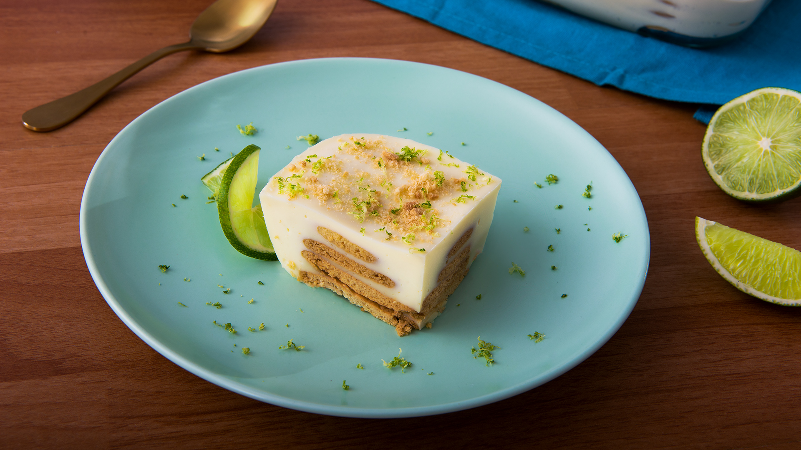

Recetario
Hot cakes
Lasaña
Carlota de limon
Hot cakes

Ingredientes
- 3/4 de taza de leche evaporada
- 1 huevo
- 2 cuchardas de mantequilla derretida
- 1 cucharda de vainilla
- 1 taza de harina de hot cakes
- 2 cuchardas de mantequilla
- 1/2 de taza de moras azules
- 1/2 de freasas desinfectadas y cortadas
- 6 hojas de menta desinfectada
- leche condensada
Materiales
- sarten
- licuadora
- bol
- cazo
batidora
- cucharon
- espatula
Proceso
- Mezcla la leche evaporada con el huevo, 2 cucharadas de mantequilla fundida, la esencia de vainilla y la harina para hot cakes
- Calienta una sartén, agrega un poco de mantequilla y con ayuda de un cucharón vierte un poco de la mezcla para formar los hot cakes; cocina por ambos lados y repite el procedimiento con el resto de la preparación
- Sirve los hot cakes, decora con moras azules, fresas, las hojas de menta y con un poco de leche condensada
Lasaña

Ingredientes
- 3 1/2 libras de carne de res molida
- 2 cucharaditas de ajo en polvo Ajo en polvo
2 cucharadas de Caldo de Carne de Res
- 1 cucharada de aceite vegetal
- 1/3 taza de cebolla cortada finamente
- 3 dientes de ajo cortados finamente
- 1/2 taza de apio cortado finamente
- 1 sobre de Salsa De Tomate Bolognesa
- 3/4 taza de agua
- 4 hojas de laurel
- 3/4 libra de pasta para lasaña cocida Pasta de lasaña precocida
- 2 tazas de queso mozzarella rallado
- Sal y pimienta al gusto
- 1 taza de queso parmesano
Proceso
- En un tazón, colocar la carne, el ajo en polvo, el Caldo de Carne de Res 2, la pimienta molida y marinar por 5 minutos
- En una cacerola grande, colocar el aceite, la cebolla, el ajo, el apio y sofreír por 2 minutos
- Añadir la carne y cocinar por 10 minutos revolviendo constantemente
- Cuando la carne adquiera una tonalidad gris clara, añadir la Salsa de Tomate estilo Boloñesa, el agua, las hojas de laurel, la sal y pimienta y cocinar a fuego medio por 15 minutos
- Armado de la lasaña: Al momento de montar la lasaña, untar con un poco de aceite un recipiente refractario o la bandeja que utilice. Colocar una pequeña cantidad de salsa, cubrir el fondo de la bandeja con lascas de pasta precocida, verter una cantidad pequeña de carne, añadir el queso mozzarella y una mínima parte de queso parmesano
- Repetir este procedimiento hasta rellenar el recipiente. Finalmente, colocar una capa de pasta precocida, la salsa que haya quedado y cubrir con los quesos. La lasaña tiene que tener una buena cantidad de líquido para que la pasta se cocine. Si está muy seca, se le puede agregar caldo de pollo
- Taparla con papel aluminio y llevar al horno a 150°C por 40 minutos
- Paso adicional: A esta receta le puede agregar aceitunas negras y hojas de albahaca al momento de cocinar la carne
Carlota de limón

Ingredientes
- 1 Lata de Leche Condensada
- 1 Lata de Leche Evaporada
- 1/4 Taza de Jugo de limón colado
- 30 Galletas Marías
- 1 Limón cortado en rodajas
- 5 Galletas Marías troceadas
- 1 Rama de Menta desinfectada
- 1 Limón (su ralladura)
Proceso
- Licúa la Leche Condensada con la Leche Evaporada y sin dejar de licuar, agrega poco a poco el jugo de limón
- En un refractario cuadrado, coloca una capa de galletas, un poco de la mezcla de limón y repite hasta terminar con el resto de los ingredientes. Cubre con plástico adherente y refrigera por 1 hora o hasta que esté firme
- Decora con las rodajas de limón, las galletas troceadas, las hojas de menta y la ralladura de limón. Ofrece